# Addition
1 + 12ACTL3143 & ACTL5111 Deep Learning for Actuaries
You need to install a few things to get Python running on your computer. I’ve created a sequence of recordings on how to get your tooling setup as a Python data scientist. Some of the items in that playlist are recommended but not 100% necesary for this course, so I’ll label those as optional in the list below:
Apart from that, there are some resources there on setting up AI code completion tools (GitHub Copilot), but I recommend against using this for the course. You’ll learn better by hand-coding your models.
In this module we will be introducing you to Python, covering fundamentals such as variables, control flow, functions, classes, and packages. You should all be familiar with the language R. R shares many similarities with Python, including some syntax, data types, and uses - R and Python are the two most popular languages for data science [source: edx.org]. Because of this, you should be able to easily understand the basics of Python, and in this lab, we will make some references to R.
Much like with R, Python can also be used as a calculator:
# Addition
1 + 12# Subtraction
9 - 63# Multiplication
12 * 896# Division
54 / 183.0# Modulo
39 % 87# Brackets
3 * (4 + 5)27# Powers - note that unlike R, Python uses "**" to denote powers
4 ** 364Assigning values to variables is easy:
a = 1
print(a)1a = 2
b = 3
b = a
print(b)2Types of variables in Python include:
intfloatstringboolNoneTypeYou can check the type of a variable by using the type() function:
print(type(1))
print(type(1.0))
print(type("Hello World!"))
print(type(1 == 1.0))
print(type(None))<class 'int'>
<class 'float'>
<class 'str'>
<class 'bool'>
<class 'NoneType'>x = 1
x += 2
print(x)3x = 1
x -= 2
print(x)-1x = 1
x *= 2
print(x)2x = 1
x /= 2
print(x)0.5Much like in R, you can encode strings by using single or double quotation marks:
s1 = "Hello"s2 = 'World!'You can concatenate strings by using the + operator:
s1 + " " + s2'Hello World!'F-strings are one of the ways you can substitute the values of variables into a string:
f"{s1} {s2}"'Hello World!'In Python, the logical operators and, or, and not are used. This is unlike in R, in which the symbols &, |, and ! are used.
True and FalseFalseTrue or FalseTrueUse the functions int(), float(), and str() to convert values from one type to another:
x = 3
x = str(x)
print(x)3is.string() to determine whether a value is a string. Unfortunately, there isn’t a similar function in Python. Can you figure out a way to check whether a value is a string in Python? What about an integer, or a bool?type(type(bool(int("3"))))?not(True and not False or False and not (True or False))?5*(2+4**3)330x = "Hello"
print(x == str(x))Truetype(type(bool(int("3"))))typenot(True and not False or False and not (True or False))FalseThere are four types of built-in data structures available in Python: lists, dictionaries, tuples, and sets.
Lists are very much like R vectors, in which they hold a series of values of any type. Lists in Python can be altered, whether it be by deleting or adding elements, or by editing specific elements inside the list. This feature is known as mutability. You will later see that some of the other Python data structures do not have this feature.
l = [1,2,3,4,5]Tuples are similar to lists, except that they are immutable, i.e. they cannot be altered.
t = (1,3)Dictionaries are a type of data structure that stores data in key-value pairs.
Dictionaries are mutable, however, you cannot change the name of a key.
wam_dict = {
"Alice": 87.4,
"Bob": 77.9,
"Charlie": 81.3
}Sets are a type of unordered data structure that store a collection of unique values. You cannot change the specific values inside a set, but you can remove and insert elements.
fruits = {"Apple", "Banana", "Strawberry"}
print(fruits)
fruits.add("Mango")
print(fruits)
fruits.add("Banana")
print(fruits) #This will not return an error, but the duplicate element will not be added
fruits.remove("Apple")
print(fruits){'Apple', 'Banana', 'Strawberry'}
{'Apple', 'Mango', 'Banana', 'Strawberry'}
{'Apple', 'Mango', 'Banana', 'Strawberry'}
{'Mango', 'Banana', 'Strawberry'}l.sort() method.insert() method.reverse().pop() on the list twice.remove() to remove the number 11 from the list.shapes.sides.shapes and sides using dict(zip()). Print the dictionary."Pentagon": 5 to this dictionary to show that it is mutable. Print the dictionary.In Python, note the use of elif rather than else if. Also, note that Python uses indentation (as opposed to braces in R, C++, JavaScript, and other langagues) to denote different blocks of code.
profit = -30
if profit >= 0:
print("Profitable")
elif profit == 0:
print("Break even")
else:
print("Loss")LossYou can use for loops in Python to iterate through each value in a list, tuple, or other collection.
actl_core = ["ACTL1101", "ACTL2111", "ACTL2131", "ACTL2102"]
for course in actl_core:
print(course)ACTL1101
ACTL2111
ACTL2131
ACTL2102You can also use for loops to iterate through a sequence of numbers by creating the range() object.
for i in range(5):
print(i ** 2)0
1
4
9
16while loops can be used to perform the same tasks as for loops, however, they tend to be more cumbersome to put together.
i = 0
while i < 5:
print(i ** 2)
i += 10
1
4
9
16while loops are useful, however, for creating “sentinel” loops, in which a loop runs until a variable reaches a specified value called a sentinel:
scores = [9, 9, 6, 7, 3, 10, 0, 1, 4, 6, 2]
print(sum(scores))
i = 0
pre_fail_score = 0
while scores[i] != 0: # 0 is a sentinel value
pre_fail_score += scores[i]
i += 1
print(pre_fail_score)57
44break and continue statements in Python.3, 7, -9, 11, 2, -5, 0, 4.sum_pos, and set it equal to 0.sum_pos.continue statement.break.Functions are instantiated using the def keyword.
def addOne(x = 0):
return x + 1
print(addOne(10))
print(addOne()) #Using default arguments11
1factorial(n), that takes in one input n, and returns n!.fibonacci(n), that takes in one input n, and returns the nth Fibonacci number.A couple of fundamental data science packages in Python are NumPy and Pandas. NumPy is a package for handling matrices and vector math, while Pandas handles dataframes and data wrangling.
Libraries are imported using the import keyword:
import numpyYou can set an alias to the libraries you are importing. Usually this is done to simplify the name of a long library.
import numpy as np
import pandas as pdYou can also import specific functions from a library by using the from keyword:
from sklearn.preprocessing import StandardScalerIn this lab, we will be working with two libraries used for data processing, NumPy and Pandas.
If you have successfully installed Anaconda onto your system, you should already have NumPy and Pandas installed as well. However, if for some reason you do not have a particular library installed, or you would like to update a particular library, you can use the command line to install new packages.
You can either open up Command Prompt/Terminal and type:
pip install numpyThe pip method will also work on Anaconda Prompt. This will install the libraries onto your machine. When installing libraries, it is highly recommended that you create a Conda environment, as this allows you to install and manage separate sets of libraries for each Python project you are working on.
For a tutorial on how to set up your own environments, see https://docs.conda.io/projects/conda/en/latest/user-guide/concepts/environments.html
NumPy is a package used for scientific computing in Python, with the ability to perform advanced mathematical operations, linear algebra, and vectorisation. Core to the NumPy package is the NumPy array.
Unlike lists in base Python, NumPy arrays can only work with numerical data. NumPy arrays are also faster and consumes less memory than Python lists (source: numpy.org/doc/stable/user/absolute_beginners.html).
l1 = [1,1,1]
l2 = [2,2,2]
a1 = np.array(l1)
a2 = np.array(l2)
#What do you notice?
print(l1 + l2)
print(a1 + a2)[1, 1, 1, 2, 2, 2]
[3 3 3]As you can see in the above code snippet, NumPy arrays are designed for linear algebra operations.
Other operations you can do include adding and multiplying arrays by a constant, calculating determinants of matrices, and even calculating eigenvalues and eigenvectors:
a1 + 3 #adds 3 to each element of the array, returns an error if done to a list
a1 * 3 #multiplies each element by 3array([3, 3, 3])m1 = np.array([[2,4],[1,3]]) #creating a 2D array, i.e. a matrix
print(m1)
print(np.linalg.det(m1)) #Determinant
print(np.linalg.eig(m1)) #Eigenvalues and eigenvectors[[2 4]
[1 3]]
2.0
EigResult(eigenvalues=array([0.43844719+0.j, 4.56155281+0.j]), eigenvectors=array([[-0.93153209+0.j, -0.84212294+0.j],
[ 0.36365914+0.j, -0.5392856 +0.j]]))You can create arrays using ranges or linearly spaced sequences:
array_range = np.arange(5)
array_lin = np.linspace(start = 0, stop = 1, num = 6)
print(array_range)
print(array_lin)[0 1 2 3 4]
[0. 0.2 0.4 0.6 0.8 1. ]As mentioned beforehand, you can create a matrix by feeding a list of lists into np.array():
m1 = np.array([[2,4],[1,3]])You can also create matrices of zeroes and identity matrices:
m_zero = np.zeros([3,3]) #3 x 3 matrix
print(m_zero)
m_ones = np.ones([3,3])
print(m_ones)
m_id = np.identity(3)
print(m_id)[[0. 0. 0.]
[0. 0. 0.]
[0. 0. 0.]]
[[1. 1. 1.]
[1. 1. 1.]
[1. 1. 1.]]
[[1. 0. 0.]
[0. 1. 0.]
[0. 0. 1.]]Pandas is a Python library used for working with tabular data. It contains tools for data manipulation, time series, and data visualisation. Pandas can be considered a Python equivalent to dplyr, and core to Pandas is the DataFrame object, which is analogous to R’s data.frame type.
import pandas as pdFor this lab we will be working with the Titanic machine learning dataset - a legendary dataset in the data science community. It is available at https://www.kaggle.com/competitions/titanic/data, and we will specifically be using train.csv.
To use the dataset in Google Colab, we need to upload and then import it. To see which datasets are available in Google Colab, click the folder icon on the sidebar. Here, you can see the datasets you have uploaded, as well as any sample datasets that are already built into Google Colab. To upload files, click the upload icon that appears and select the file that you want to upload.
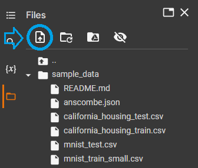
We will import the dataset using Pandas’ read_csv() function.
titanic = pd.read_csv("train.csv")This creates a DataFrame object, which is a 2-dimensional, tabular data structure.
There are a number of methods available in Pandas to inspect your data, including .head() and .info().
titanic.head() #much like the head() function in R, this method prints the first 5 rows of the dataset.| PassengerId | Survived | Pclass | Name | Sex | Age | SibSp | Parch | Ticket | Fare | Cabin | Embarked | |
|---|---|---|---|---|---|---|---|---|---|---|---|---|
| 0 | 1 | 0 | 3 | Braund, Mr. Owen Harris | male | 22.0 | 1 | 0 | A/5 21171 | 7.2500 | NaN | S |
| 1 | 2 | 1 | 1 | Cumings, Mrs. John Bradley (Florence Briggs Th... | female | 38.0 | 1 | 0 | PC 17599 | 71.2833 | C85 | C |
| 2 | 3 | 1 | 3 | Heikkinen, Miss. Laina | female | 26.0 | 0 | 0 | STON/O2. 3101282 | 7.9250 | NaN | S |
| 3 | 4 | 1 | 1 | Futrelle, Mrs. Jacques Heath (Lily May Peel) | female | 35.0 | 1 | 0 | 113803 | 53.1000 | C123 | S |
| 4 | 5 | 0 | 3 | Allen, Mr. William Henry | male | 35.0 | 0 | 0 | 373450 | 8.0500 | NaN | S |
titanic.tail(10) # Prints last 10 rows| PassengerId | Survived | Pclass | Name | Sex | Age | SibSp | Parch | Ticket | Fare | Cabin | Embarked | |
|---|---|---|---|---|---|---|---|---|---|---|---|---|
| 881 | 882 | 0 | 3 | Markun, Mr. Johann | male | 33.0 | 0 | 0 | 349257 | 7.8958 | NaN | S |
| 882 | 883 | 0 | 3 | Dahlberg, Miss. Gerda Ulrika | female | 22.0 | 0 | 0 | 7552 | 10.5167 | NaN | S |
| 883 | 884 | 0 | 2 | Banfield, Mr. Frederick James | male | 28.0 | 0 | 0 | C.A./SOTON 34068 | 10.5000 | NaN | S |
| 884 | 885 | 0 | 3 | Sutehall, Mr. Henry Jr | male | 25.0 | 0 | 0 | SOTON/OQ 392076 | 7.0500 | NaN | S |
| 885 | 886 | 0 | 3 | Rice, Mrs. William (Margaret Norton) | female | 39.0 | 0 | 5 | 382652 | 29.1250 | NaN | Q |
| 886 | 887 | 0 | 2 | Montvila, Rev. Juozas | male | 27.0 | 0 | 0 | 211536 | 13.0000 | NaN | S |
| 887 | 888 | 1 | 1 | Graham, Miss. Margaret Edith | female | 19.0 | 0 | 0 | 112053 | 30.0000 | B42 | S |
| 888 | 889 | 0 | 3 | Johnston, Miss. Catherine Helen "Carrie" | female | NaN | 1 | 2 | W./C. 6607 | 23.4500 | NaN | S |
| 889 | 890 | 1 | 1 | Behr, Mr. Karl Howell | male | 26.0 | 0 | 0 | 111369 | 30.0000 | C148 | C |
| 890 | 891 | 0 | 3 | Dooley, Mr. Patrick | male | 32.0 | 0 | 0 | 370376 | 7.7500 | NaN | Q |
titanic.info() # Gives a list of columns, their counts and their types, akin to the str() function in R.<class 'pandas.DataFrame'>
RangeIndex: 891 entries, 0 to 890
Data columns (total 12 columns):
# Column Non-Null Count Dtype
--- ------ -------------- -----
0 PassengerId 891 non-null int64
1 Survived 891 non-null int64
2 Pclass 891 non-null int64
3 Name 891 non-null str
4 Sex 891 non-null str
5 Age 714 non-null float64
6 SibSp 891 non-null int64
7 Parch 891 non-null int64
8 Ticket 891 non-null str
9 Fare 891 non-null float64
10 Cabin 204 non-null str
11 Embarked 889 non-null str
dtypes: float64(2), int64(5), str(5)
memory usage: 118.9 KBSelecting columns of a Pandas DataFrame is done using square brackets notation:
titanic["Age"] # Selecting "Age" column from dataset0 22.0
1 38.0
2 26.0
3 35.0
4 35.0
...
886 27.0
887 19.0
888 NaN
889 26.0
890 32.0
Name: Age, Length: 891, dtype: float64titanic[["Sex","Age"]] # Selecting multiple columns| Sex | Age | |
|---|---|---|
| 0 | male | 22.0 |
| 1 | female | 38.0 |
| 2 | female | 26.0 |
| 3 | female | 35.0 |
| 4 | male | 35.0 |
| ... | ... | ... |
| 886 | male | 27.0 |
| 887 | female | 19.0 |
| 888 | female | NaN |
| 889 | male | 26.0 |
| 890 | male | 32.0 |
891 rows × 2 columns
There are several ways of selecting rows in a DataFrame, including selecting by row number using the square bracket notation or the .iloc method, or selecting by row name using the .loc method.
titanic[4:9] # Selecting rows by the index (can be different to row number)| PassengerId | Survived | Pclass | Name | Sex | Age | SibSp | Parch | Ticket | Fare | Cabin | Embarked | |
|---|---|---|---|---|---|---|---|---|---|---|---|---|
| 4 | 5 | 0 | 3 | Allen, Mr. William Henry | male | 35.0 | 0 | 0 | 373450 | 8.0500 | NaN | S |
| 5 | 6 | 0 | 3 | Moran, Mr. James | male | NaN | 0 | 0 | 330877 | 8.4583 | NaN | Q |
| 6 | 7 | 0 | 1 | McCarthy, Mr. Timothy J | male | 54.0 | 0 | 0 | 17463 | 51.8625 | E46 | S |
| 7 | 8 | 0 | 3 | Palsson, Master. Gosta Leonard | male | 2.0 | 3 | 1 | 349909 | 21.0750 | NaN | S |
| 8 | 9 | 1 | 3 | Johnson, Mrs. Oscar W (Elisabeth Vilhelmina Berg) | female | 27.0 | 0 | 2 | 347742 | 11.1333 | NaN | S |
titanic.iloc[4:9] # Selecting rows by their row numbers| PassengerId | Survived | Pclass | Name | Sex | Age | SibSp | Parch | Ticket | Fare | Cabin | Embarked | |
|---|---|---|---|---|---|---|---|---|---|---|---|---|
| 4 | 5 | 0 | 3 | Allen, Mr. William Henry | male | 35.0 | 0 | 0 | 373450 | 8.0500 | NaN | S |
| 5 | 6 | 0 | 3 | Moran, Mr. James | male | NaN | 0 | 0 | 330877 | 8.4583 | NaN | Q |
| 6 | 7 | 0 | 1 | McCarthy, Mr. Timothy J | male | 54.0 | 0 | 0 | 17463 | 51.8625 | E46 | S |
| 7 | 8 | 0 | 3 | Palsson, Master. Gosta Leonard | male | 2.0 | 3 | 1 | 349909 | 21.0750 | NaN | S |
| 8 | 9 | 1 | 3 | Johnson, Mrs. Oscar W (Elisabeth Vilhelmina Berg) | female | 27.0 | 0 | 2 | 347742 | 11.1333 | NaN | S |
titanic.set_index("Name", inplace=True) #sets the "Name" column as the index
# By setting inplace = True, we modify the existing DataFrame rather than creating a new one.
# In other words, we do not need to assign it back to the titanic variable.# Selecting rows using .loc
titanic.loc[["Allen, Mr. William Henry", "Moran, Mr. James"]]| PassengerId | Survived | Pclass | Sex | Age | SibSp | Parch | Ticket | Fare | Cabin | Embarked | |
|---|---|---|---|---|---|---|---|---|---|---|---|
| Name | |||||||||||
| Allen, Mr. William Henry | 5 | 0 | 3 | male | 35.0 | 0 | 0 | 373450 | 8.0500 | NaN | S |
| Moran, Mr. James | 6 | 0 | 3 | male | NaN | 0 | 0 | 330877 | 8.4583 | NaN | Q |
When selecting both rows and columns, using .loc or .iloc is necessary:
titanic.iloc[4:9, [0, 3]] # Selecting rows 4 to 8, and columns 0 and 3| PassengerId | Sex | |
|---|---|---|
| Name | ||
| Allen, Mr. William Henry | 5 | male |
| Moran, Mr. James | 6 | male |
| McCarthy, Mr. Timothy J | 7 | male |
| Palsson, Master. Gosta Leonard | 8 | male |
| Johnson, Mrs. Oscar W (Elisabeth Vilhelmina Berg) | 9 | female |
titanic.loc[["McCarthy, Mr. Timothy J", "Johnson, Mrs. Oscar W (Elisabeth Vilhelmina Berg)"], "Age"]Name
McCarthy, Mr. Timothy J 54.0
Johnson, Mrs. Oscar W (Elisabeth Vilhelmina Berg) 27.0
Name: Age, dtype: float64You can use the bracket notation to filter the dataset:
titanic[titanic["Age"] >= 18]| PassengerId | Survived | Pclass | Sex | Age | SibSp | Parch | Ticket | Fare | Cabin | Embarked | |
|---|---|---|---|---|---|---|---|---|---|---|---|
| Name | |||||||||||
| Braund, Mr. Owen Harris | 1 | 0 | 3 | male | 22.0 | 1 | 0 | A/5 21171 | 7.2500 | NaN | S |
| Cumings, Mrs. John Bradley (Florence Briggs Thayer) | 2 | 1 | 1 | female | 38.0 | 1 | 0 | PC 17599 | 71.2833 | C85 | C |
| Heikkinen, Miss. Laina | 3 | 1 | 3 | female | 26.0 | 0 | 0 | STON/O2. 3101282 | 7.9250 | NaN | S |
| Futrelle, Mrs. Jacques Heath (Lily May Peel) | 4 | 1 | 1 | female | 35.0 | 1 | 0 | 113803 | 53.1000 | C123 | S |
| Allen, Mr. William Henry | 5 | 0 | 3 | male | 35.0 | 0 | 0 | 373450 | 8.0500 | NaN | S |
| ... | ... | ... | ... | ... | ... | ... | ... | ... | ... | ... | ... |
| Rice, Mrs. William (Margaret Norton) | 886 | 0 | 3 | female | 39.0 | 0 | 5 | 382652 | 29.1250 | NaN | Q |
| Montvila, Rev. Juozas | 887 | 0 | 2 | male | 27.0 | 0 | 0 | 211536 | 13.0000 | NaN | S |
| Graham, Miss. Margaret Edith | 888 | 1 | 1 | female | 19.0 | 0 | 0 | 112053 | 30.0000 | B42 | S |
| Behr, Mr. Karl Howell | 890 | 1 | 1 | male | 26.0 | 0 | 0 | 111369 | 30.0000 | C148 | C |
| Dooley, Mr. Patrick | 891 | 0 | 3 | male | 32.0 | 0 | 0 | 370376 | 7.7500 | NaN | Q |
601 rows × 11 columns
This has reduced the dataset from 891 rows to 601.
If we wanted to combine multiple conditions together, we can use conditional operators. However, Python’s usual conditional operators (and, or, not) will not work here, and instead we will need to use symbols (&, |, !).
# Selecting passengers whose ages are 18 and above and are in passenger class 3.
titanic[(titanic["Age"] >= 18) & (titanic["Pclass"] == 3)] #Note that we need to wrap each conditional statement in parentheses.| PassengerId | Survived | Pclass | Sex | Age | SibSp | Parch | Ticket | Fare | Cabin | Embarked | |
|---|---|---|---|---|---|---|---|---|---|---|---|
| Name | |||||||||||
| Braund, Mr. Owen Harris | 1 | 0 | 3 | male | 22.0 | 1 | 0 | A/5 21171 | 7.2500 | NaN | S |
| Heikkinen, Miss. Laina | 3 | 1 | 3 | female | 26.0 | 0 | 0 | STON/O2. 3101282 | 7.9250 | NaN | S |
| Allen, Mr. William Henry | 5 | 0 | 3 | male | 35.0 | 0 | 0 | 373450 | 8.0500 | NaN | S |
| Johnson, Mrs. Oscar W (Elisabeth Vilhelmina Berg) | 9 | 1 | 3 | female | 27.0 | 0 | 2 | 347742 | 11.1333 | NaN | S |
| Saundercock, Mr. William Henry | 13 | 0 | 3 | male | 20.0 | 0 | 0 | A/5. 2151 | 8.0500 | NaN | S |
| ... | ... | ... | ... | ... | ... | ... | ... | ... | ... | ... | ... |
| Markun, Mr. Johann | 882 | 0 | 3 | male | 33.0 | 0 | 0 | 349257 | 7.8958 | NaN | S |
| Dahlberg, Miss. Gerda Ulrika | 883 | 0 | 3 | female | 22.0 | 0 | 0 | 7552 | 10.5167 | NaN | S |
| Sutehall, Mr. Henry Jr | 885 | 0 | 3 | male | 25.0 | 0 | 0 | SOTON/OQ 392076 | 7.0500 | NaN | S |
| Rice, Mrs. William (Margaret Norton) | 886 | 0 | 3 | female | 39.0 | 0 | 5 | 382652 | 29.1250 | NaN | Q |
| Dooley, Mr. Patrick | 891 | 0 | 3 | male | 32.0 | 0 | 0 | 370376 | 7.7500 | NaN | Q |
277 rows × 11 columns
That line of code is quite longwinded, so if you wanted to filter your DataFrame in a more concise way, you can use the .query() method:
titanic.query("Age >= 18 & Pclass == 3")| PassengerId | Survived | Pclass | Sex | Age | SibSp | Parch | Ticket | Fare | Cabin | Embarked | |
|---|---|---|---|---|---|---|---|---|---|---|---|
| Name | |||||||||||
| Braund, Mr. Owen Harris | 1 | 0 | 3 | male | 22.0 | 1 | 0 | A/5 21171 | 7.2500 | NaN | S |
| Heikkinen, Miss. Laina | 3 | 1 | 3 | female | 26.0 | 0 | 0 | STON/O2. 3101282 | 7.9250 | NaN | S |
| Allen, Mr. William Henry | 5 | 0 | 3 | male | 35.0 | 0 | 0 | 373450 | 8.0500 | NaN | S |
| Johnson, Mrs. Oscar W (Elisabeth Vilhelmina Berg) | 9 | 1 | 3 | female | 27.0 | 0 | 2 | 347742 | 11.1333 | NaN | S |
| Saundercock, Mr. William Henry | 13 | 0 | 3 | male | 20.0 | 0 | 0 | A/5. 2151 | 8.0500 | NaN | S |
| ... | ... | ... | ... | ... | ... | ... | ... | ... | ... | ... | ... |
| Markun, Mr. Johann | 882 | 0 | 3 | male | 33.0 | 0 | 0 | 349257 | 7.8958 | NaN | S |
| Dahlberg, Miss. Gerda Ulrika | 883 | 0 | 3 | female | 22.0 | 0 | 0 | 7552 | 10.5167 | NaN | S |
| Sutehall, Mr. Henry Jr | 885 | 0 | 3 | male | 25.0 | 0 | 0 | SOTON/OQ 392076 | 7.0500 | NaN | S |
| Rice, Mrs. William (Margaret Norton) | 886 | 0 | 3 | female | 39.0 | 0 | 5 | 382652 | 29.1250 | NaN | Q |
| Dooley, Mr. Patrick | 891 | 0 | 3 | male | 32.0 | 0 | 0 | 370376 | 7.7500 | NaN | Q |
277 rows × 11 columns
In Pandas you can aggregate datasets using the .groupby() method:
titanic.groupby("Pclass").sum()["Survived"]Pclass
1 136
2 87
3 119
Name: Survived, dtype: int64Notice in the above line of code, we combined two methods. In Pandas, you can chain multiple methods together, much like dplyr’s pipline operator (%>%) in R.
# Select the names of passengers in class 3 who are 65 years of age or older.
titanic.reset_index().query("Pclass == 3 & Age >= 65")["Name"]116 Connors, Mr. Patrick
280 Duane, Mr. Frank
851 Svensson, Mr. Johan
Name: Name, dtype: strEmbarked is Q.Fare is less than 10Fare for female passengers in class 2?Let’s select the Ticket column:
titanic["Ticket"]Name
Braund, Mr. Owen Harris A/5 21171
Cumings, Mrs. John Bradley (Florence Briggs Thayer) PC 17599
Heikkinen, Miss. Laina STON/O2. 3101282
Futrelle, Mrs. Jacques Heath (Lily May Peel) 113803
Allen, Mr. William Henry 373450
...
Montvila, Rev. Juozas 211536
Graham, Miss. Margaret Edith 112053
Johnston, Miss. Catherine Helen "Carrie" W./C. 6607
Behr, Mr. Karl Howell 111369
Dooley, Mr. Patrick 370376
Name: Ticket, Length: 891, dtype: strWhen selecting a single column of the DataFrame, Pandas returns what is known as a Series. This is a data structure used to represent one-dimensional data, much like a list or NumPy array. They are more flexible than NumPy arrays because they can hold non-numeric data types. However, they are not as flexible as lists because they can only hold one datatype at a time. If you try to create a Series with values of different data types, Pandas will convert all the elements of the Series into strings.
# You can create series from lists, tuples, and NumPy arrays
l = ["The", "quick", "brown", "fox"]
t = (3,1,4,1,5,9)
a = np.array(t)
mix = ["this", 3, "will", True, "convert"]
print(pd.Series(l))
print(pd.Series(t))
print(pd.Series(a))
print(pd.Series(mix)) #converted into strings0 The
1 quick
2 brown
3 fox
dtype: str
0 3
1 1
2 4
3 1
4 5
5 9
dtype: int64
0 3
1 1
2 4
3 1
4 5
5 9
dtype: int64
0 this
1 3
2 will
3 True
4 convert
dtype: objectMatplotlib is a Python library for creating high-quality data visualisations. It can be used to build a wide variety of charts, and in this tutorial we will explore how to build line plots, scatter plots, bar plots, and histograms. Charts built using Matplotlib are highly customisable.
As a data scientist, the ability to visualise your data effectively is important as it allows you to develop a deep understanding and relationship with your data. You’ll be able to see potential trends and data characteristics that you can incorporate or account for in your modelling later.
Once Matplotlib is installed, you can import it into your Python program:
import matplotlib.pyplot as pltNote that we specifically need to import pyplot as opposed to Matplotlib itself. This is because pyplot is an interface for Matplotlib that enables the library to work more like MATLAB, in which you will first initialise the figure and then each function makes some change to that figure (source: https://matplotlib.org/stable/tutorials/introductory/pyplot.html).
Pyplot’s plot() function will create a line plot:
# Create sample data
x = [-2,-1,0,1,2]
y = [-4,-2,0,2,4]
# Create line plot
plt.plot(x,y)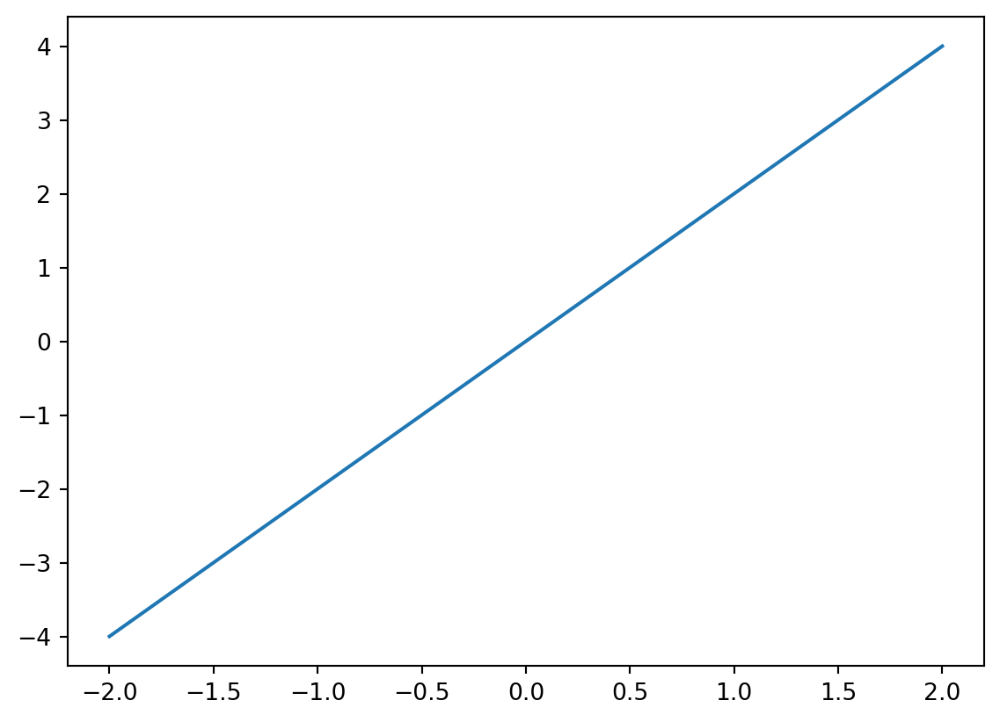
As you can see, we have created a simple line plot. We can customise this by adding a title, customising the x- and y-axes, and even changing the colour of the line:
# Create sample data
x = [-2,-1,0,1,2]
y = [-4,-2,0,2,4]
# Create line plot
plt.plot(x,y, color = "purple")
# Add title
plt.title("Plot of y = 2x")
# Add axes labels
plt.xlabel("x")
plt.ylabel("y")Text(0, 0.5, 'y')
You can also add multiple lines to a plot:
# Create sample data
x = [-2,-1,0,1,2]
y1 = [-4,-2,0,2,4]
y2 = [6,3,0,-3,-6]
# Create line plot
plt.plot(x,y1, color = "purple")
plt.plot(x,y2, color = "green")
# Add title
plt.title("Plots of y = 2x and y = -3x")
# Add axes labels
plt.xlabel("x")
plt.ylabel("y")Text(0, 0.5, 'y')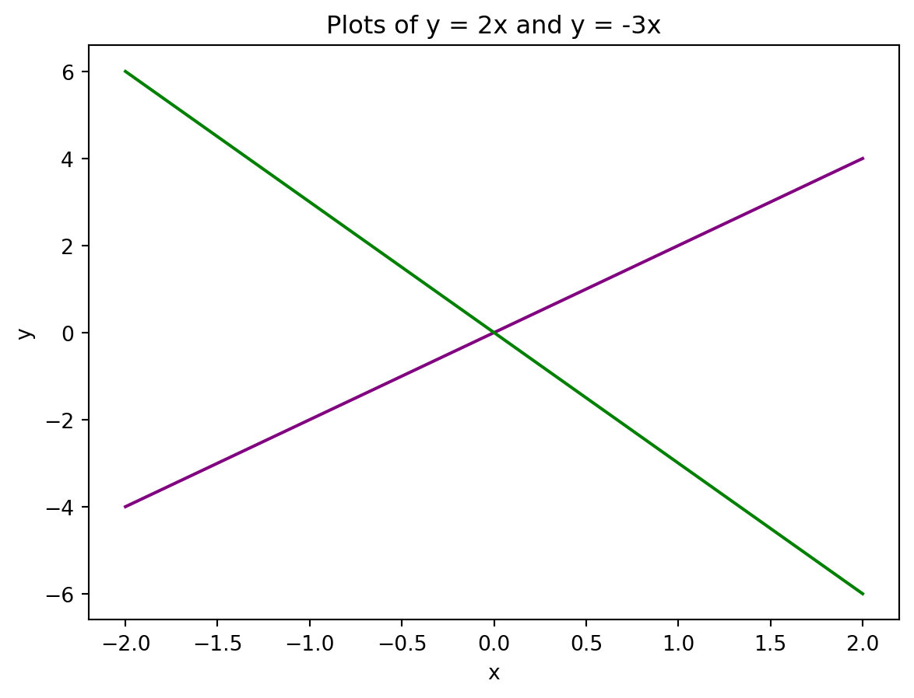
We use plt.scatter() to put together a scatter plot:
# Create sample data
x = [0, 1, 2, 3, 4, 5]
y = [0, 1, 4, 9, 16, 25]
# Create scatter plot
plt.scatter(x, y)
# Add title
plt.title("Scatter plot of y = x^2, x >= 0")
# Add axes labels
plt.xlabel("x")
plt.ylabel("y")Text(0, 0.5, 'y')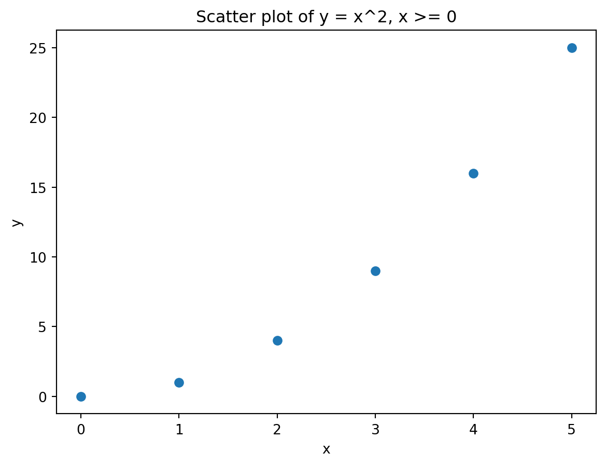
We use plt.bar() to put together a bar plot:
# Create sample data
x = [1, 2, 3, 4, 5]
y = [1, 4, 9, 16, 25]
# Create scatter plot
plt.bar(x, y)
# Add title
plt.title("Bar plot of y = x^2, x >= 0")
# Add axes labels
plt.xlabel("x")
plt.ylabel("y")Text(0, 0.5, 'y')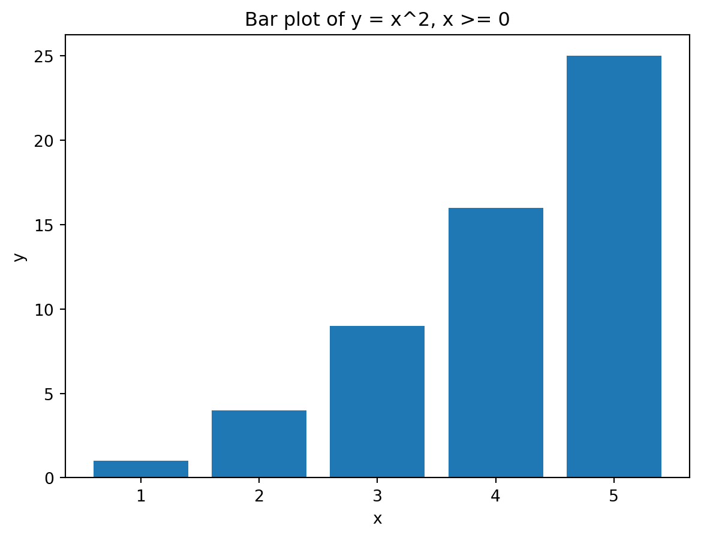
We use plt.hist() to put together a histogram.
# Create sample data
x = [1.2,1.5,1.7,2,2.1,2.2,2.8,3.6,4.1,4.4,4.9]
# Create histogram
plt.hist(x)
# Add title
plt.title("Histogram")
# Add axes labels
plt.xlabel("x")
plt.ylabel("Frequency")Text(0, 0.5, 'Frequency')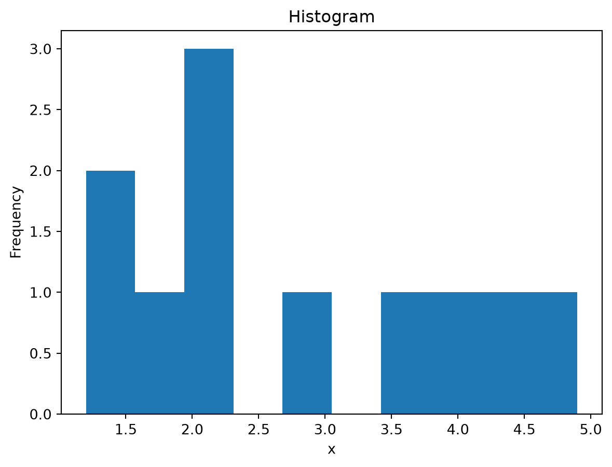
plt.hist() will automatically set the bin widths for you.
While we are on the topic of histograms, let’s customise the histogram we have just created, specifically in terms of the bins.
You can set the number of bins that the histogram can have using the bins argument in plt.hist():
# Create sample data
x = [1.2,1.5,1.7,2,2.1,2.2,2.8,3.6,4.1,4.4,4.9]
# Create histogram with 4 bins
plt.hist(x, bins = 4)
# Add title
plt.title("Histogram, 4 bins")
# Add axes labels
plt.xlabel("x")
plt.ylabel("Frequency")Text(0, 0.5, 'Frequency')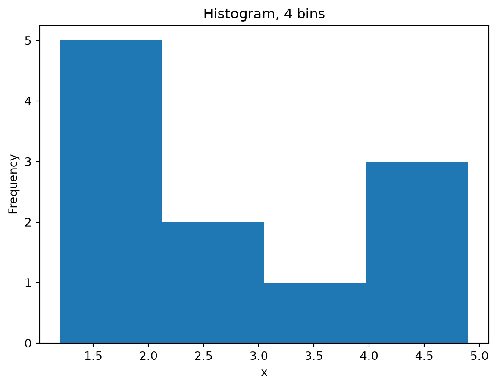
Alternatively, you can set custom bin edges:
# Create sample data
x = [1.2,1.5,1.7,2,2.1,2.2,2.8,3.6,4.1,4.4,4.9]
# Set custom bin edges
bin_edges = [0,1.5,3,4,5]
# Create histogram with 4 bins of custom width
plt.hist(x, bins = bin_edges, edgecolor = "black")
# Add title
plt.title("Histogram, 4 bins custom")
# Add axes labels
plt.xlabel("x")
plt.ylabel("Frequency")Text(0, 0.5, 'Frequency')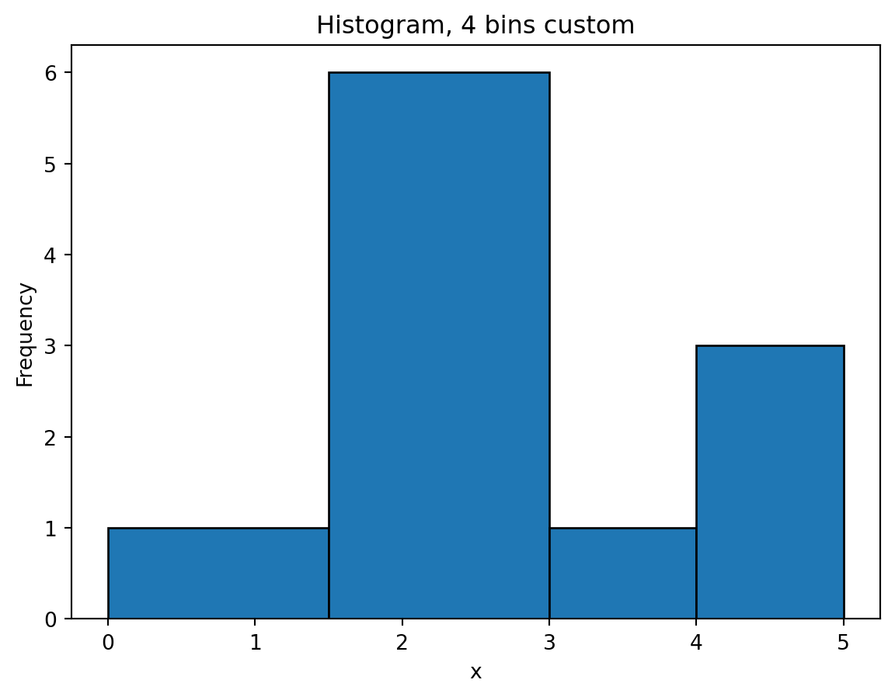
Let’s go back to our line plot of y = 2x:
# Create sample data
x = [-2,-1,0,1,2]
y = [-4,-2,0,2,4]
# Create line plot
plt.plot(x,y, color = "purple")
# Add title
plt.title("Plot of y = 2x")
# Add axes labels
plt.xlabel("x")
plt.ylabel("y")Text(0, 0.5, 'y')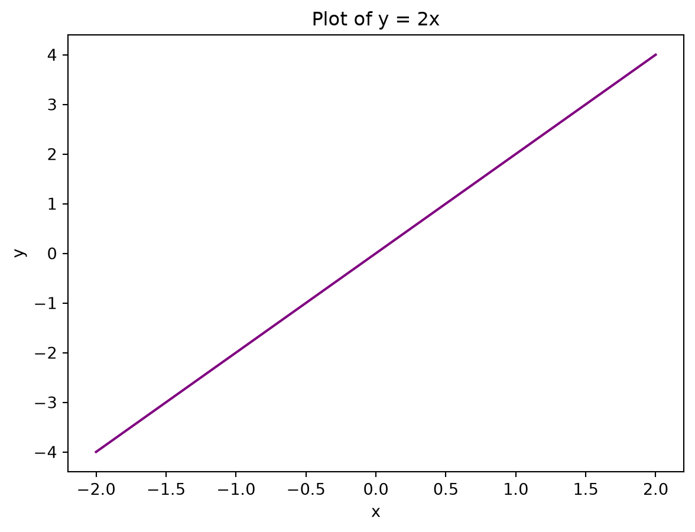
Notice that the tick marks for both the x- and y-axes are quite close together. You might prefer this as it gives you more granularity, however, some may find this quite cluttered. We can edit the axes tick marks (as well as the axes limits) using the plt.xticks() and plt.yticks() functions.
# Create sample data
x = [-2,-1,0,1,2]
y = [-4,-2,0,2,4]
# Create line plot
plt.plot(x,y, color = "purple")
# Add title
plt.title("Plot of y = 2x")
# Edit tick marks
plt.xticks(range(-2,3))
plt.yticks([-4,-2,0,2,4])
# Add axes labels
plt.xlabel("x")
plt.ylabel("y")Text(0, 0.5, 'y')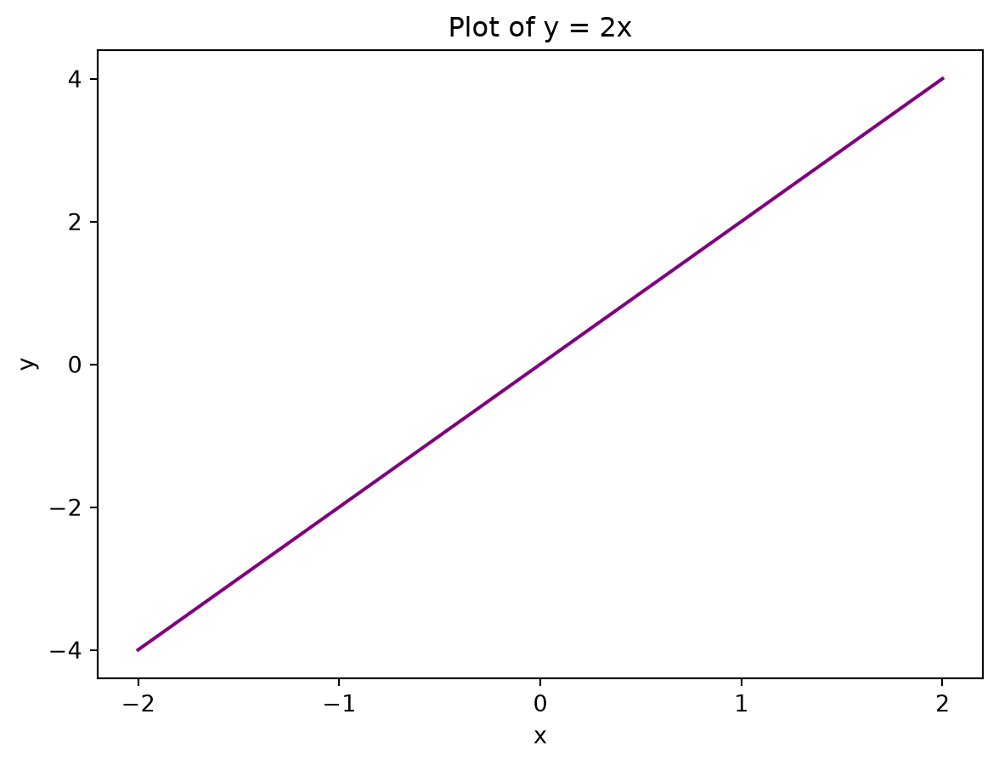
As you can see, the x- and y-axes do look significantly cleaner. We can improve how easy it is to see certain values by adding a grid using plt.grid(True)
# Create sample data
x = [-2,-1,0,1,2]
y = [-4,-2,0,2,4]
# Create line plot
plt.plot(x,y, color = "purple")
# Add title
plt.title("Plot of y = 2x")
# Edit tick marks
plt.xticks(range(-2,3))
plt.yticks([-4,-2,0,2,4])
# Add grid
plt.grid(True)
# Add axes labels
plt.xlabel("x")
plt.ylabel("y")Text(0, 0.5, 'y')You can also edit the x- and y-axis limits by using plt.xlim() and plt.ylim():
# Create sample data
x = [-2,-1,0,1,2]
y = [-4,-2,0,2,4]
# Create line plot
plt.plot(x,y, color = "purple")
# Add title
plt.title("Plot of y = 2x")
# Set axis limits
plt.xlim((-3,3))
plt.ylim((-5,5))
# Add axes labels
plt.xlabel("x")
plt.ylabel("y")Text(0, 0.5, 'y')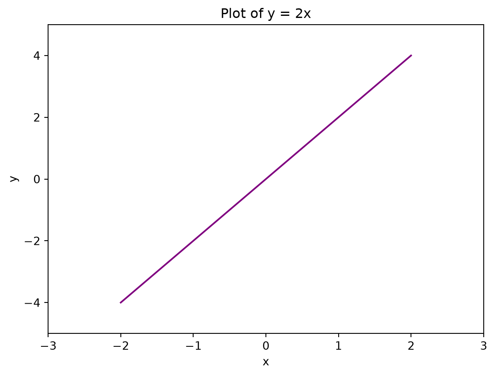
To format the text in a plot created using Matplotlib, you can use the fontsize and fontweight arguments of the various text functions, such as title, xlabel, and ylabel. These arguments allow you to specify the font size and font weight (i.e. thickness) of the text, respectively.
# Create sample data
x = [-2,-1,0,1,2]
y = [-4,-2,0,2,4]
# Create line plot
plt.plot(x,y, color = "purple")
# Add title and bold it
plt.title("Plot of y = 2x", fontweight = 'bold')
# Add axes labels and set their font sizes to 15
plt.xlabel("x", fontsize = 15)
plt.ylabel("y", fontsize = 15)Text(0, 0.5, 'y')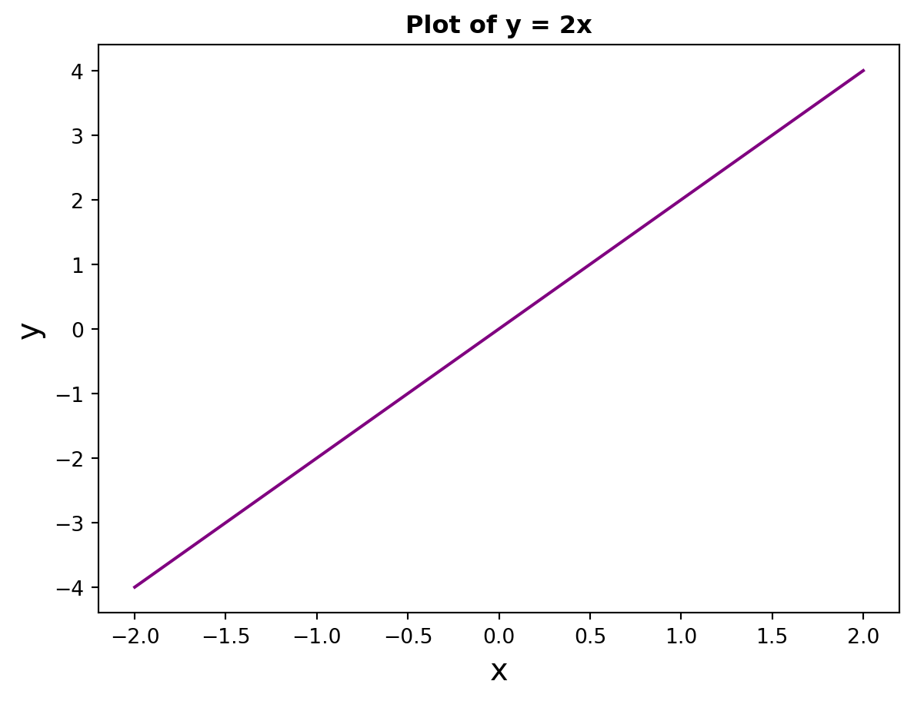
You can use the fontstyle argument to specify whether you would like to italicise your text. The fontfamily argument allows you to specify the font family, such as “serif”, “sans-serif”, or “monospace”. If you want to use a specific font, you can use the fontname argument instead.
# Create sample data
x = [-2,-1,0,1,2]
y = [-4,-2,0,2,4]
# Create line plot
plt.plot(x,y, color = "purple")
# Add title and bold it
plt.title("Plot of y = 2x", fontstyle = 'italic')
# Add axes labels and set their font sizes to 15
plt.xlabel("This is the x-axis", fontsize = 15, fontfamily = 'monospace')
plt.ylabel("This is the y-axis",
fontsize = 15,
fontfamily = 'serif')Text(0, 0.5, 'This is the y-axis')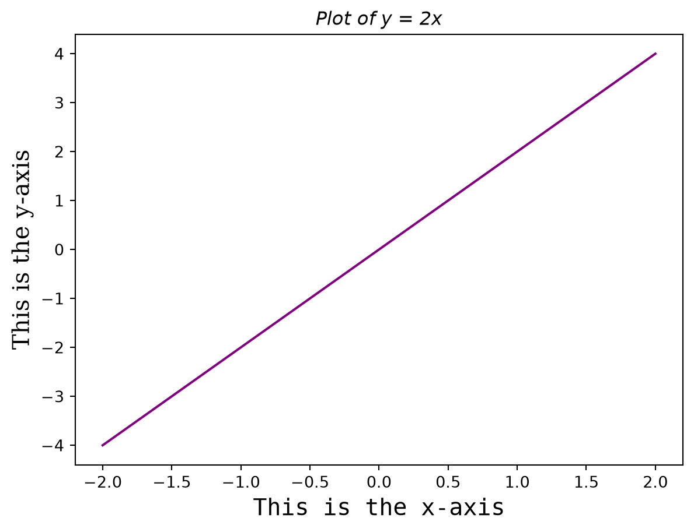
You can add a legend to your plot using the plt.legend() argument. Notice that to label the lines in your plot, you need to use the label argument in the plt.plot() function, rather than through the legend function itself:
# Create sample data
x = [-2,-1,0,1,2]
y1 = [-4,-2,0,2,4]
y2 = [6,3,0,-3,-6]
# Create line plot
plt.plot(x,y1, color = "purple", label = "y = 2x")
plt.plot(x,y2, color = "green", label = "y = -3x")
# Add title
plt.title("Plots of y = 2x and y = -3x")
# Add a legend to the top right hand corner
plt.legend(loc="upper right")
# Add axes labels
plt.xlabel("x")
plt.ylabel("y")Text(0, 0.5, 'y')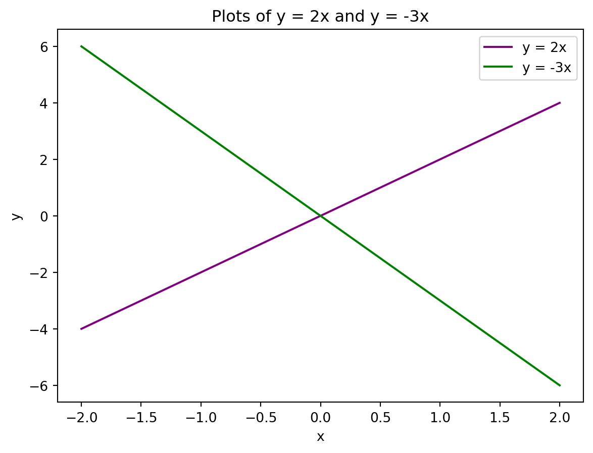
If you want to visualise multiple plots at a time in the form of a grid, you can use the plt.subplots() function:
# Create sample data
x = [-2,-1,0,1,2]
y1 = [-4,-2,0,2,4]
y2 = [6,3,0,-3,-6]
# Create 1x2 grid of charts, with a figure size of 16x9 units
fig, ax = plt.subplots(nrows=1, ncols=2, figsize=(16, 9))
# Create a line plot in each space on the grid
ax[0].plot(x,y1, color = "purple")
ax[1].plot(x,y2, color = "green")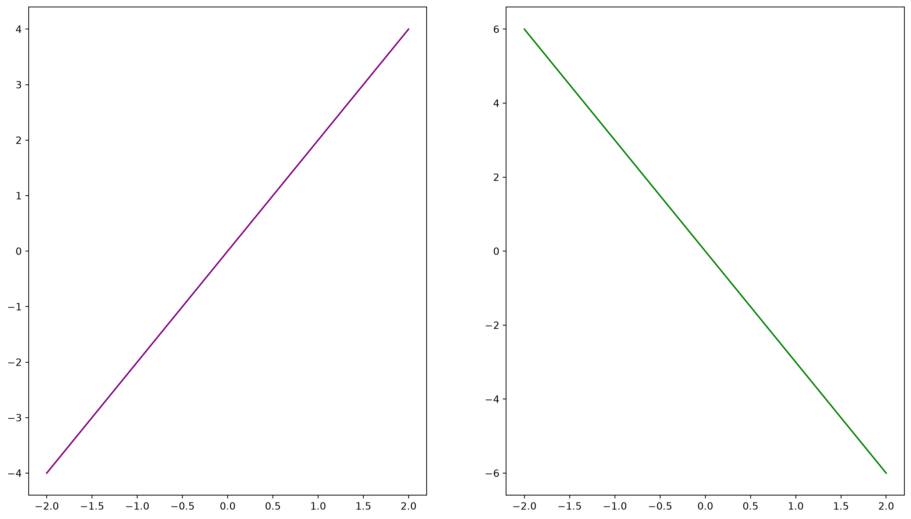
Use the plt.savefig() function to save your plots. This function takes in the name of the file that you want to save your chart to. Because of this, you can save a chart to various formats including PNG, JPEG, and TIFF.
Let’s fully build our line chart and save it to linechart.png.
# Create sample data
x = [-2,-1,0,1,2]
y1 = [-4,-2,0,2,4]
y2 = [6,3,0,-3,-6]
# Create line plot
plt.plot(x,y1, color = "purple", label = "y = 2x")
plt.plot(x,y2, color = "green", label = "y = -3x")
# Add title
plt.title("Plots of y = 2x and y = -3x")
# Add a legend to the top right hand corner
plt.legend(loc="upper right")
# Edit tick marks
plt.xticks(range(-2,3))
plt.yticks([-4,-2,0,2,4])
# Add grid
plt.grid(True)
# Add axes labels
plt.xlabel("x")
plt.ylabel("y")
# Save chart
plt.savefig("linechart.png")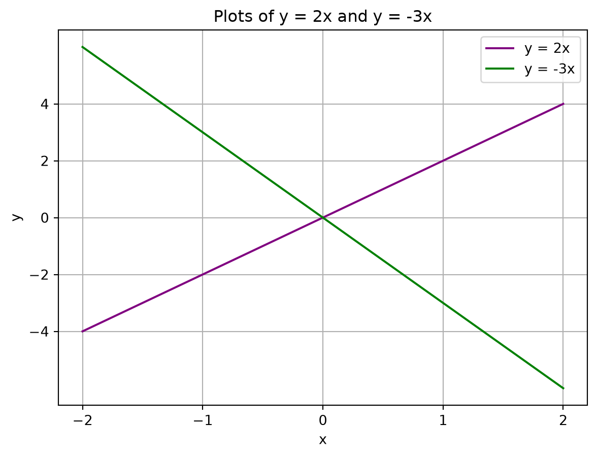
The chart should now appear in the file explorer pane in Google Colab.
That lab looks at how to incorporate Markdown and LaTeX into your Google Colab notebooks. The purpose of this part of the lab is to enhance how you annotate your code. With LaTeX, you can include equations into your notebooks.
Markdown is a lightweight markup language that you can use to add formatting elements to plaintext text documents. It is widely used in the academic and technical communities for its simplicity and versatility. Markdown is easy to read and write, and it can be converted to HTML, PDF, and other formats.
Unfortunately there isn’t one standard Markdown syntax, but the most common one is GitHub Flavored Markdown. This is the syntax that Google Colab uses.
You can create headers by using the # symbol. The number of # symbols you use will determine the size of the header. For example, # Header 1 will create a large header, while ## Header 2 will create a smaller header.
You can create bulleted lists by using the - symbol. For example:
- Item 1
- Item 2
- Item 3You can also create numbered lists by using numbers followed by periods. For example:
1. Item 1
2. Item 2
3. Item 3You can create emphasis by using the * or the _ symbol.
*italic* will create italic text, while **bold** will create bold text._italic_ will create italic text, while __bold__ will create bold text.You can create links by using the [text](url) syntax. For example, [Google](https://www.google.com) will create a link to Google.
You can include images by using the  syntax. For example,  will display the Google logo:

You can include code snippets by using the backtick symbol (`). For example, `print("Hello, World!")` will display print("Hello, World!").
You can also create code blocks by using three backticks. For example:
```python print(“Hello, World!”) ```
will display:
print("Hello, World!")You can create tables by using the | symbol to separate columns and - symbols to separate the header row from the content rows. For example:
| Header 1 | Header 2 | Header 3 |
|----------|----------|----------|
| Row 1, Col 1 | Row 1, Col 2 | Row 1, Col 3 |
| Row 2, Col 1 | Row 2, Col 2 | Row 2, Col 3 |will display:
| Header 1 | Header 2 | Header 3 |
|---|---|---|
| Row 1, Col 1 | Row 1, Col 2 | Row 1, Col 3 |
| Row 2, Col 1 | Row 2, Col 2 | Row 2, Col 3 |
You can include LaTeX equations in your Markdown documents.
LaTeX is a typesetting system commonly used in research and other technical fields. It enables users to create high-quality documents with professional-looking mathematical and scientific equations, figures, and tables.
LaTeX has the ability to do all of the things that Markdown can do, and more. However, LaTeX has a steeper learning curve than Markdown, and it is not as widely used outside of academia and technical fields. Nowadays, its unique selling point is its mathematical typesetting capabilities — which is why Markdown’s equations use LaTeX syntax.
For full LaTeX documents, you can install a desktop-based distribution such as MikTeX, or online using Overleaf. However, in this lab we will just be looking at how you can incorporate LaTeX into Google Colab.
There are two ways you can incorporate LaTeX equations: either by using the $$ notation or by using the \[\] notation.
By wrapping your equation in one dollar sign ($), you can write mathematical expressions in-line. For example, $E = mc^2$ becomes E = mc^2.
By wrapping your equation in two dollar signs ($$), you can write mathematical expressions in “display mode”, which puts expressions on a standalone line: $$a^2 + b^2 = c^2.$$ becomes
a^2 + b^2 = c^2.
You can also create mathematical expressions in display mode by wrapping your expression in \[ and ]\ symbols. However, this does not seem to work in Google Colab for now, so we recommend using the dollar sign notation instead.
Use braces {} if there are multiple terms in the exponent: $x^{a+b}$ becomes x^{a+b}.
Inside a math environment, superscripts are denoted with (^) and subscripts denoted with (_). For example, $a^b$ and $a_b$ become a^b and a_b respectively.
There are many mathematical symbols that can be called upon using the backslash followed by the name of the symbol, including Greek symbols.
$\alpha, \beta, \gamma, \delta, \pi, \Pi, \phi, \Phi$
\alpha, \beta, \gamma, \delta, \pi, \Pi, \phi, \Phi
There are far too many to list, and you can find a comprehensive list at The Comprehensive LaTeX Symbol List - The CTAN archive
LaTeX has an equivalent of ‘functions’ (commands) which also start with backslash but take one or more arguments in braces. For example, take the following equation for the area of a circle:
\text{Area of Circle} = \pi r^2
This equation is represented by the following LaTeX code:
$$\text{Area of Circle} = \pi r^2$$The \text{} command converts the text in the expression from italicised to non-italicised.
Other commands include \frac{}{} (which requires two arguments), \sqrt{}, and \partial:
$$\frac{\partial}{\partial x} = \sqrt{x}$$\frac{\partial}{\partial x} = \sqrt{x}
For matrices with square brackets (braces), use \begin{bmatrix} \end{bmatrix}
$$B = \begin{bmatrix}
a & b & c \\
d & e & f \\
g & h & i
\end{bmatrix}$$B = \begin{bmatrix} a & b & c \\ d & e & f \\ g & h & i \end{bmatrix}
For matrices with parentheses, use \begin{pmatrix} \end{pmatrix}
$$\sigma^2 = \begin{pmatrix}
\sigma_1^2 & \sigma_{12} \\
\sigma_{12} & \sigma_2^2
\end{pmatrix}$$\sigma^2 = \begin{pmatrix} \sigma_1^2 & \sigma_{12} \\ \sigma_{12} & \sigma_2^2 \end{pmatrix}
General matrix notation (notice the cdots, vdots, and ddots) :
$A_{m,n} =
\begin{pmatrix}
a_{1,1} & a_{1,2} & \cdots & a_{1,n} \\
a_{2,1} & a_{2,2} & \cdots & a_{2,n} \\
\vdots & \vdots & \ddots & \vdots \\
a_{m,1} & a_{m,2} & \cdots & a_{m,n}
\end{pmatrix}$A_{m,n} = \begin{pmatrix} a_{1,1} & a_{1,2} & \cdots & a_{1,n} \\ a_{2,1} & a_{2,2} & \cdots & a_{2,n} \\ \vdots & \vdots & \ddots & \vdots \\ a_{m,1} & a_{m,2} & \cdots & a_{m,n} \end{pmatrix}
$\boldsymbol{z=Xw+b}$ produces \boldsymbol{z=Xw+b},$\sigma(z_{i}) = \frac{e^{z_i}}{\sum_{j=1}^K e^{z_j}}$ produces \sigma(z_{i}) = \frac{\mathrm{e}^{z_i}}{\sum_{j=1}^K \mathrm{e}^{z_j}}.The Jupyter Notebook experience separates code cells from Markdown cells. It is more convenient for experimenting with code, and tasks where there is more coding than there is writing. However, for tasks where there is more writing than coding, it is more convenient to use RMarkdown or Quarto.
RMarkdown is a variant of Markdown that allows you to include R code chunks in your document. It runs the R code and includes the output in the document. It has been around for many years, and I recommend watching Rob Hyndman’s presentation on how he uses RMarkdown for nearly all his writing tasks.
Quarto is a newer improvement on RMarkdown that supports Python, R, and many other programming languages, and improves upon RMarkdown in a number of ways.
To create a code chunk which will be executed, you can use the following syntax:
```{python}
#| label: fig-polar
#| fig-cap: "A line plot on a polar axis"
import numpy as np
import matplotlib.pyplot as plt
r = np.arange(0, 2, 0.01)
theta = 2 * np.pi * r
fig, ax = plt.subplots(
subplot_kw = {'projection': 'polar'}
)
ax.plot(theta, r)
ax.set_rticks([0.5, 1, 1.5, 2])
ax.grid(True)
plt.show()
```This produces:
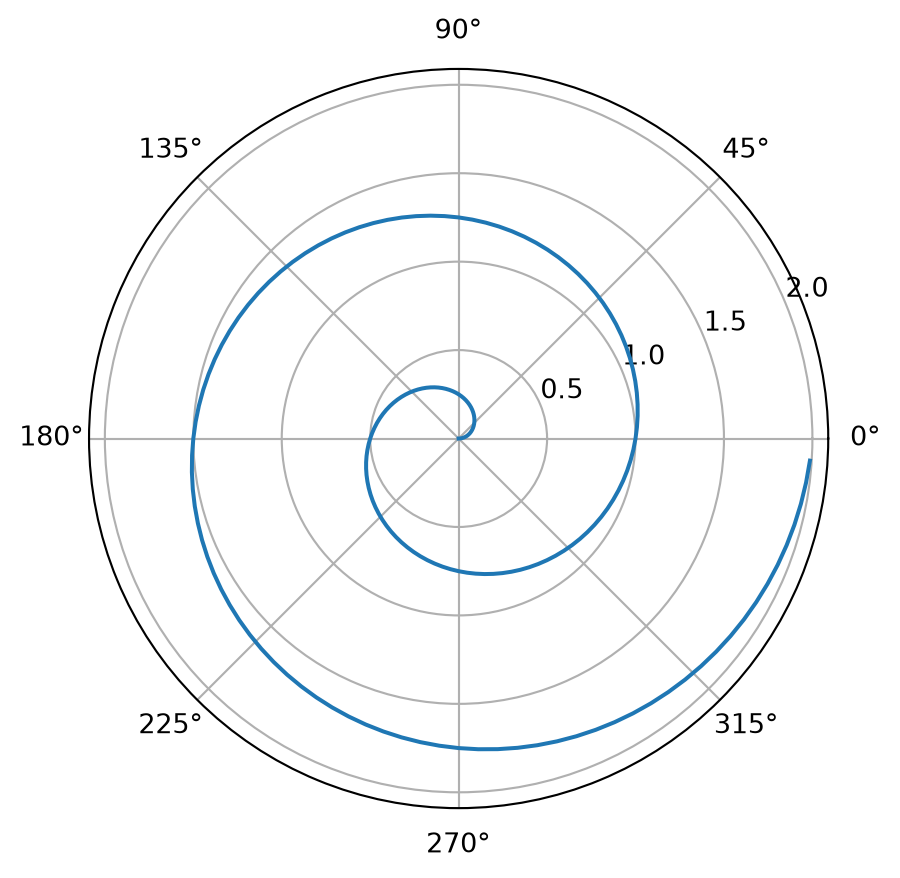
Quarto is the software I used to make this website, the lecture slides, my personal website (https://laub.au/) and much more. While I don’t particularly recommend you use Quarto for your assignments, I do recommend you use it for your personal projects.
Thanks to Sam Luo & Eric Dong who contributed to the LaTeX section of the lab.
I used GitHub Copilot to draft the earlier Markdown demonstrations.